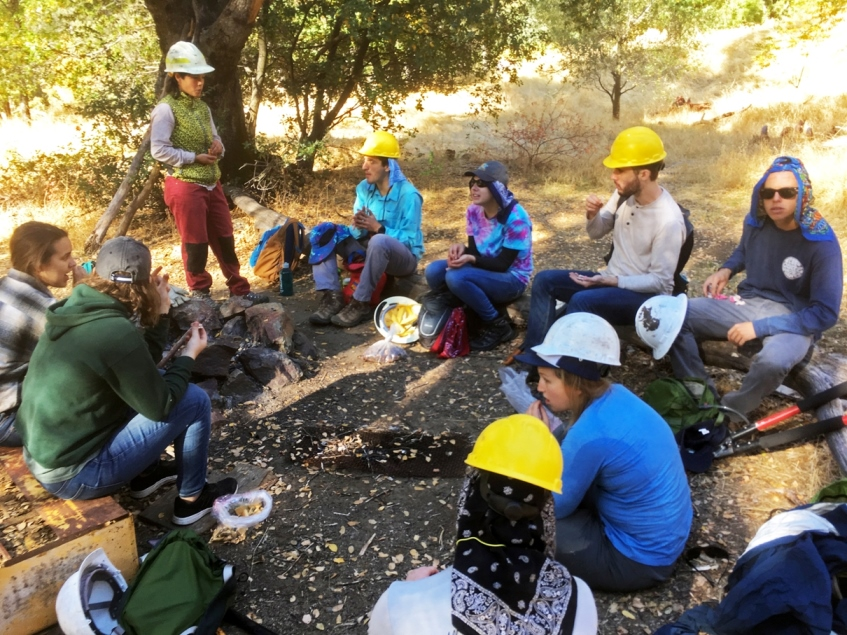

Promoting Stewardship - Trail Tending
Our trail tending stewardship program brings individuals together and introduces them to the joy of working in comradery towards a common goal. Our work is focused on national public lands located between Yosemite National Park and the population centers of Mariposa County. Our access to the benefits that nature provides is in jeopardy, however. Why? A perfect storm of trail demise caused by natural disasters and little to no federal budget for non-motorized trails is here. Mariposa Trails is rallying volunteers to tend front-country trails and promoting their use by hikers, back-packers, bikers, runners and equestrians. Most outings are in the fall and winter, when the soil is soft, the air is cool, and bugs are nowhere to be seen!

Enabling Adventure
Our adventure programs aim to reconnect urban dwellers with the roots of nature while acquainting them with new experiences and people. Simply join an outdoor adventure with Mariposa Trails to enjoy a day while exploring local mountain peaks, rivers, trails, old mining communities, forest glens or cascades.

Advancing Education
We are developing “The Confident Hiker" program, which will be an introduction to fun and safe day-hiking adventures in our Sierra foothills area.

Advocating for Trails
Mariposa Trails seeks to form strong and positive partnerships with local community and public agencies who manage trails. We do this through clarity of our mission and by promoting events, projects and initiatives. We are also engaged in public outreach and contributions to long-range trail planning efforts. We inform the community about our vision, activities and the places we work via social media, and by participating in annual community events, such as the Butterfly Festival and National Trail Day.